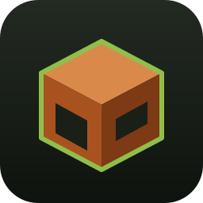
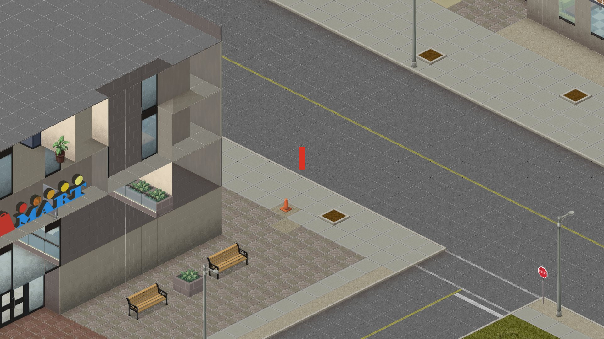
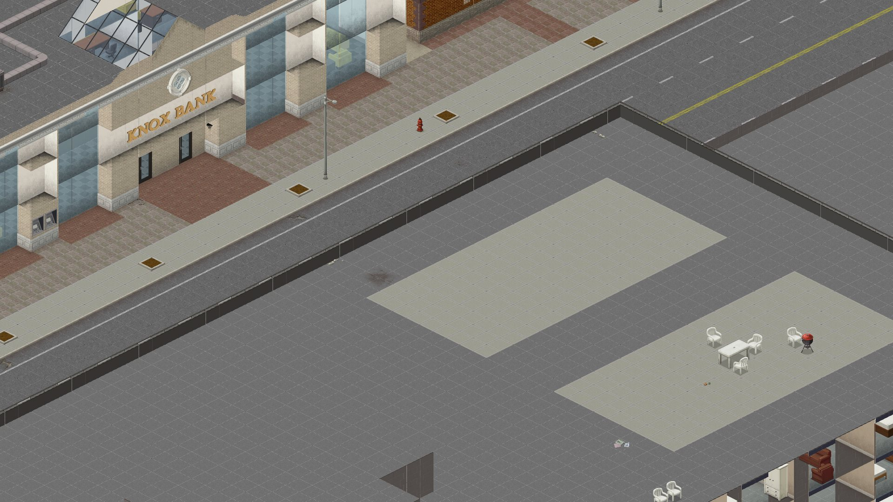
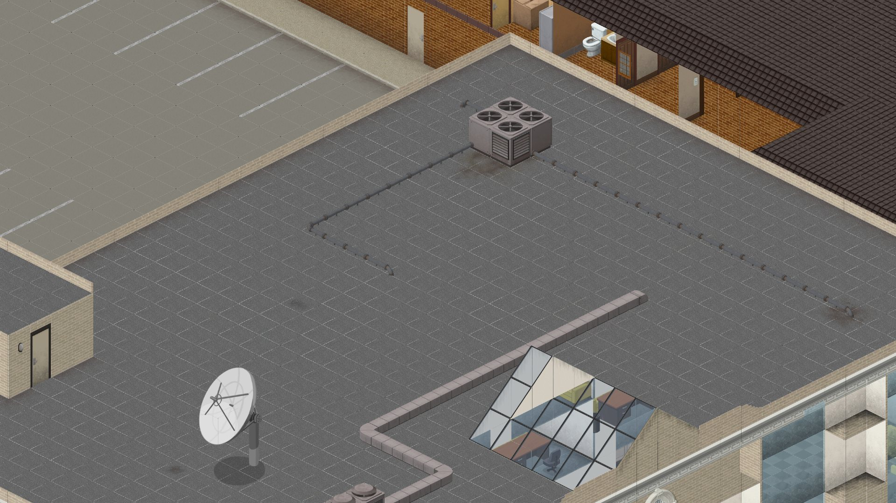

Project Zomboid, rebuilt from scratch in Rust. Fast, cross-platform, and checked against the original with differential tests.
View on GitHub


git clone https://github.com/LakoMoor/pz-rust
cd pz-rust
set PZ_DIR=C:\path\to\ProjectZomboid
cargo run --release -p pz-viewerWASD to walk, Shift to run, mouse wheel to zoom. --shot out.png renders a frame headlessly.
Characters & animation, doors, stairs, items and Lua scripting, zombies, audio, then a headless server with networking.